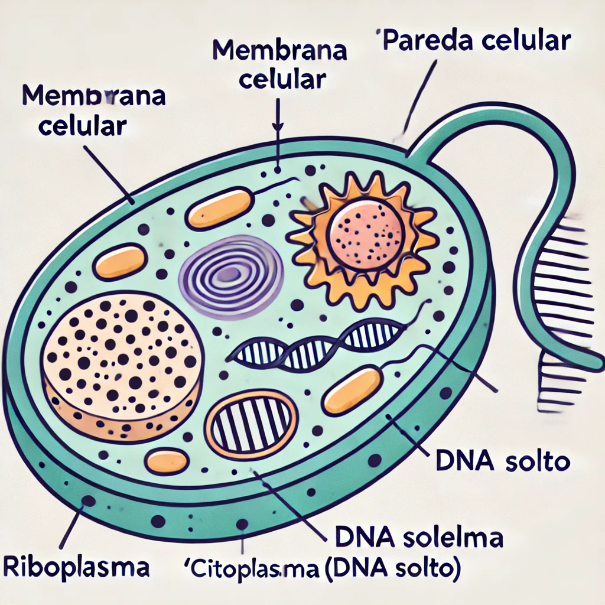

Célula Procarionte
O que é uma célula Procarionte?
-
As células procariontes são os tipos celulares mais simples e arcaicos, e estão presentes em organismos unicelulares, como bactérias e arqueobactérias. Essas células não possuem um núcleo verdadeiro, ou seja, seu material genético está disperso no citoplasma, numa região chamada nucleoide. Diferente das células eucariontes, que possuem organelas membranosas, as procariontes têm uma estrutura celular mais simples, sem mitocôndrias ou complexo de Golgi, e sua membrana plasmática é responsável por selecionar as substâncias que podem entrar e sair da célula (Flores, 2020).
-
Além disso, as células procariontes desempenham um papel fundamental em vários processos ecológicos, como a fixação de nitrogênio no solo e a fotossíntese, especialmente em organismos como as cianobactérias. Esses organismos foram essenciais no passado, pois contribuíram para a produção de oxigênio na atmosfera da Terra. Hoje, continuam a ser componentes importantes na base da cadeia alimentar, além de terem várias aplicações na biotecnologia e na produção de alimentos, como queijos e bebidas fermentadas (Manual do Enem, 2024).
-
Os organismos procariontes são classificados principalmente em bactérias e arqueobactérias, que podem assumir diferentes formas, como cocos (esféricos), bacilos (em forma de bastão) e espirilos (helicoidais). Embora vivam isoladamente, também podem formar colônias e habitar ambientes variados, incluindo locais extremos como fontes termais e áreas de alta salinidade (Flores, 2020).
-
Em termos de reprodução, as células procariontes se dividem de maneira assexuada por fissão binária. Durante esse processo, a célula duplica seu material genético e depois se divide em duas células-filhas idênticas. Isso permite uma rápida multiplicação, o que é uma vantagem adaptativa para bactérias em ambientes favoráveis (Escola Educação, 2024).